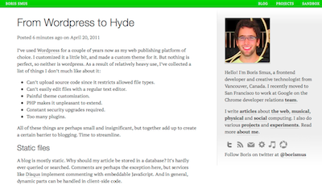
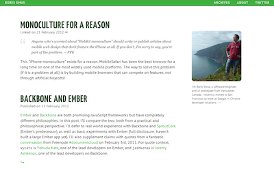

New design
I re-designed this site using the PT Sans font, aiming for appealing typography for optimal readability. Interestingly,
PT Sans is based on Russian sans serif types of the second part of the 20th century, but at the same time has distinctive features of contemporary humanistic designs.
Since visitors are increasingly coming from a variety of devices, I also created three variants of the site for small, medium and large screens via media queries:
@media screen and (max-width: $small) {/* small */}
@media screen and (min-width: $small) and (max-width: $large) {/* medium */}
@media screen and (min-width: $large) {/* large */}
Note that the above is valid SCSS (as of version 3.2)! To try it out,
you may need to install the prerelease via gem install sass --pre.
As usual, the layout of this site is largely inspired by designers far more skilled than I, including: http://viljamis.com/ and http://www.markboulton.co.uk/.
New engine
This blog can now also double as a micro blog, where I can easily post links in a social network-agnostic way. Similarly, it now hosts all of my talks, which used to live on http://smustalks.appspot.com. It's also a lot easier for me to create new posts.
All of these structural changes are largely due to me building a completely new static site generator which addresses a lot of my pains using other static generators. I'll write a separate article about this engine when I'm ready to release it to the public.
No more comments
Since the start of this blog, I've struggled with the concept of comments on my site and in on blogs in general. Even with services like disqus, which try to integrate your blog commentator personality into one place, I feel that in practice, commenting on the web is very hard to keep in one place, and the most interesting discussions end up distributed in many pockets such as Hacker News, twitter, etc. Having the in-blog comments as well only makes things messier.
Other problems include:
- Leaving a comment right after reading content encourages unconsidered responses, since readers haven't had time to process the content.
- Lately my blog has been generating a lot of spam comments that I need to moderate. I don't have time for that.
- People tend to ask for technical support in the comments, which adds very little value for other readers.
- Disqus slows down page load time, and presents a UI that's not easily skinnable.
For a more in-depth analysis about blog comments, see Matt Gemmell's thorough post on this subject.
I've disabled comments on all posts. That said, I still want to hear your ideas and feedback, and engage in discussion around topics I'm obviously interested in (enough to write about!)
Evolving designs
This is the fourth iteration of my blog's design. I apparently do a re-design every year, since I started in 2008.

This version was a small modification done to an existing wordpress theme.

I really liked this version for a long time, since it was so clean and minimal. Unfortunately the header took way too much space, and the typography left something to be desired.

This was the first "responsive" version. It had too many gimmicky, non-standard design elements.

I'm reasonably happy with the current version, especially the typography in the main body.
And strangely excited about the engine that powers this blog too (codenamed Lightning, which generates a lot of static, and is also very fast! Ha, get it?). Once released, I will write another meta-blog post about it. For now, though, I wrote a bit about Lightning here.